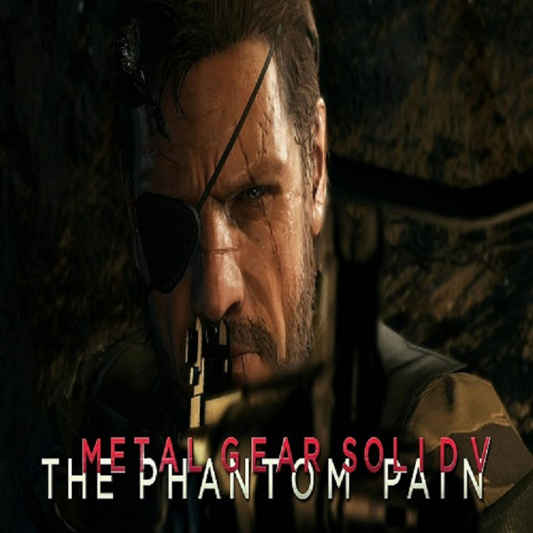
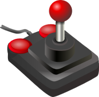
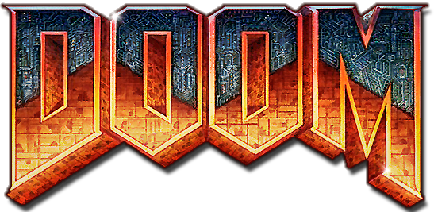

Modern Days

This is just a general list of all the classic games, and the role they played in gaming history.

Well, here it is. The game that is heralded as the start of the First Person Shooter genre and was developed by Id Software. One of the reasons too we still have video games around today. This game goes at the top of the list because when you think classics, you can't help but think DOOM first.
Personal favorite, Deus Ex is regarded as one of the greatest role playings games of all time even despite its age today. The common joke "Every time somebody mentions Deus Ex somebody else goes to reinstall it" is soemthing that still goes on today. Developed by Ion Storm, it includes a lot of themes and explores conspiracy theories that are still discussed at length today. Good choice/consequence game as well, player actions early on can really come back to help or bite you later on!
Developed by Valve Software, you play as a mute scientist with a crowbar. What is there to not love? Another classic in the FPS genre, it was also heralded for its puzzles that really challenged the player to use their mind. And of course when one mentions Half Life the question of when the 3rd installment is coming out usually follows short behind. So, I'll be the first to ask, when is HL3 happening Valve?